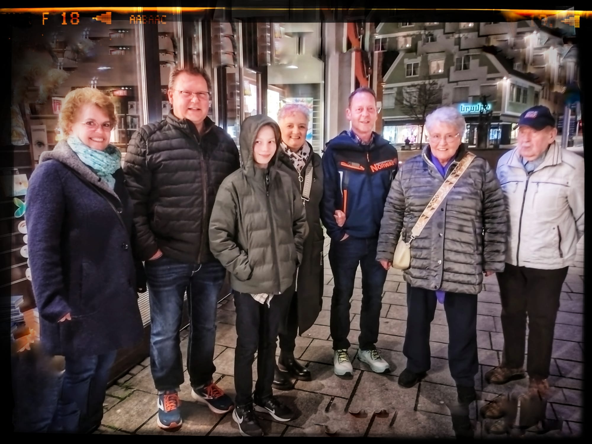
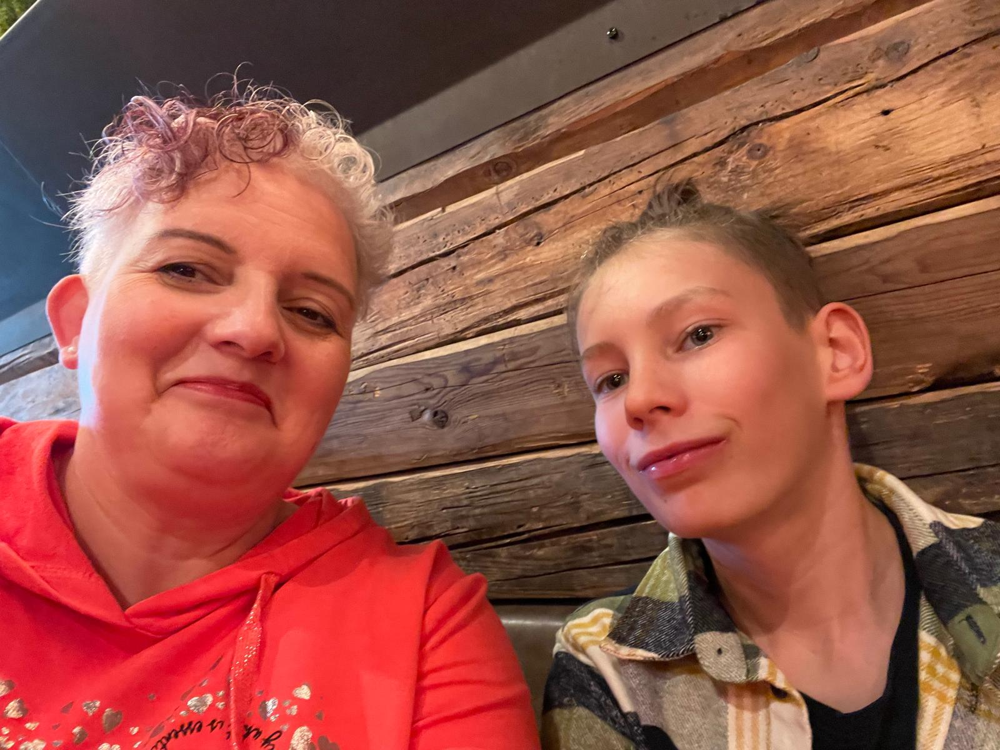
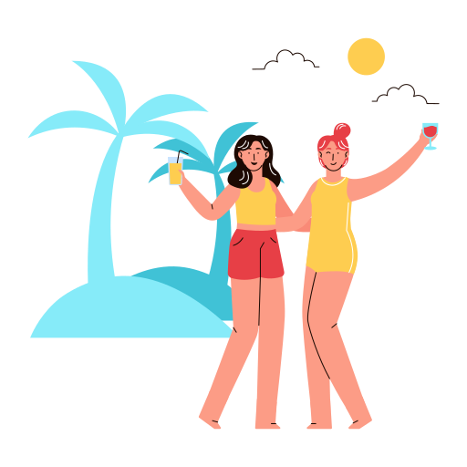

Mi ciudad natal Ellwangen
Ellwangen (Jagst) es una ciudad encantadora ubicada en el estado de Baden-Württemberg, Alemania, con una población de alrededor de 25,000 habitantes. Este lugar, rodeado de naturaleza, destaca por su rica historia y su ambiente tranquilo. Sus orígenes se remontan al siglo VIII, cuando se fundó un monasterio benedictino, y desde entonces ha sido un punto importante en la región. Uno de sus principales atractivos es el imponente castillo Schloss Ellwangen, que ofrece una vista panorámica de la ciudad y refleja su pasado medieval. También cuenta con hermosas iglesias, como la basílica de St. Vitus, un magnífico ejemplo del barroco, que son testimonio de su legado arquitectónico y religioso. Además, Ellwangen alberga el fascinante Museo de los Bárbaros, que permite explorar las raíces históricas de la región y aprender más sobre los pueblos germánicos.
Para quienes disfrutan de actividades al aire libre, la ciudad ofrece hermosos senderos para caminar o andar en bicicleta, rodeados de paisajes naturales como bosques y colinas. En verano, se puede disfrutar del lago Bucher Stausee, ideal para nadar o relajarse. También se celebran eventos culturales tradicionales, como festivales y mercados, que reflejan la esencia de la vida local. Aunque es un lugar muy bonito para visitar, con su calma y su conexión con la naturaleza, no me gustaría vivir allí. Prefiero un ambiente con más vida en las calles, mayor diversidad de personas y más oportunidades para desarrollarme tanto personal como profesionalmente.


Mi familia
Mi familia está formada por personas muy especiales que siempre me han apoyado y que extraño mucho desde que estoy estudiando en México. Mi mamá Beate, de 52 años, es una mujer increíblemente cariñosa y detallista; su comida es de lo que más extraño porque siempre sabe cómo hacerme sentir mejor con sus platillos caseros.
Mi papá Hubert, de 54 años, es un hombre muy trabajador y con un gran sentido del humor, siempre tiene un consejo o una historia interesante que contar. Mi hermana mayor Annika, de 27 años, es como mi mejor amiga, siempre lista para darme ánimos y recordarme que soy capaz de cualquier cosa.
Sin embargo, quien más extraño es mi hermano menor Iven, de 12 años, porque todavía es pequeño y siento que debería estar más presente para ayudarlo, jugar con él y acompañarlo en esta etapa tan importante de su vida. Me gustaría verlo crecer de cerca, compartir más momentos juntos y ser alguien en quien pueda apoyarse siempre.
Además de mi familia inmediata, también extraño mucho a mis abuelos. Mi abuelo es un apasionado de la jardinería; su jardín siempre está lleno de vida, y me encanta pasar tiempo con él aprendiendo sobre plantas. Su comida también es de mis favoritas, siempre tiene ese sabor único que me hace sentir en casa. Mi abuela, con su ternura y sabiduría, siempre sabe cómo hacerme sentir querida. Ojalá pudiera verlos más seguido y disfrutar más tiempo en familia, como solíamos hacerlo.
Mi perrito
Leo, mi Yorkshire Terrier, fue un compañero increíble, y aunque su partida me dejó un gran vacío, siempre recordaré lo especial que fue. Los Yorkshire Terrier son una raza pequeña, con un cuerpo compacto y una personalidad vibrante. A pesar de su tamaño, son perros muy valientes y audaces. Tienen un pelaje largo, sedoso y brillante que, aunque requiere mucho cuidado, hace que se vean muy elegantes. Son conocidos por ser extremadamente leales, inteligentes y juguetones, y pueden ser un poco traviesos, lo que los hace aún más encantadores. Aunque son pequeños, tienen una gran energía y disfrutan de las caminatas, el juego y la interacción constante con sus dueños. A menudo, son perros que se vinculan fuertemente con sus familias y buscan ser parte de cada actividad que se haga.
En cuanto a los perros en general, cada raza tiene sus propias características y necesidades, pero todos comparten una increíble capacidad de conexión emocional con los seres humanos. Los perros no solo son animales de compañía, sino también amigos leales que están ahí para apoyarnos en los momentos difíciles y alegrar nuestras vidas con su presencia. Me gustan especialmente las razas medianas, como el Australian Shepherd, que es conocido por ser extremadamente inteligente, enérgico y versátil. Los Australian Shepherds son perros que requieren mucha actividad física y mental, lo que los convierte en compañeros ideales para aquellos que disfrutan de estar al aire libre, hacer ejercicio o practicar deportes caninos. Además, su inteligencia los hace fáciles de entrenar, y siempre están dispuestos a aprender nuevos trucos y tareas. Tener un perro es una experiencia única que aporta mucho amor, alegría y, sobre todo, compañía fiel a nuestras vidas.
Mi hermano
Mi hermano Iven es una persona muy especial, siempre lleno de energía y entusiasmo. Le encanta todo lo relacionado con el trabajo técnico, especialmente si se trata de arreglar cosas o entender cómo funcionan los aparatos. También disfruta mucho pasar tiempo al aire libre, ya sea jugando o explorando nuevos lugares. Le encanta ayudar a mi papá en cualquier tarea que se le ocurra, siempre dispuesto a echar una mano, lo cual demuestra su gran corazón y su deseo de colaborar.
Además, Iven es un amante de los animales, siempre mostrando un cariño especial por ellos. Se emociona muchísimo cuando le propongo hacer alguna actividad juntos, como ir a visitar algún lugar o simplemente pasar el rato en familia. Su curiosidad y su gran corazón lo hacen una persona admirable y siempre me siento afortunada de compartir momentos con él.
Mis mejores amigas
Mis mejores amigas son personas muy especiales que siempre han formado parte importante de mi vida. Svenja, de 24 años, estudió una licenciatura en Trabajo Social en Múnich y ahora vive en Viena, Austria, donde cursa su maestría. Katherina, de 25 años, decidió seguir una carrera técnica y trabaja como secretaria, aunque recientemente optó por viajar por el mundo para conocer nuevas culturas y experiencias. Rebeca, de 28 años, es con quien crecí, ya que nuestros papás son mejores amigos; ella estudió Gestión Social, pasó una parte de su carrera en Estados Unidos y ahora trabaja asesorando a jóvenes para ayudarlos a decidir qué carrera estudiar. Con Svenja y Katha fui a la misma escuela, y fue ahí donde nos conocimos.
Actualmente, tengo más contacto con Svenja, ya que siempre hemos hecho cosas similares, aunque en diferentes lugares, lo que nos ha permitido compartir nuestros problemas y entendernos de una manera muy especial. A pesar de la distancia, el cambio de horario y lo ocupada que estoy con mis estudios, me esfuerzo por mantener el contacto, aunque a veces se me hace difícil. Sin embargo, los extraño mucho y siempre llevo en el corazón los momentos que compartimos juntas.
Mi hermana y yo
Mi hermana Annika y yo siempre hemos sido muy unidas, en parte porque solo nos llevamos un año de diferencia, lo que nos permitió compartir muchas etapas de la vida al mismo tiempo. Cuando éramos niñas, solíamos hacer todo juntas: jugar, explorar, e incluso tener nuestras pequeñas aventuras en casa o en el vecindario. A medida que crecimos, esa conexión se mantuvo fuerte; de hecho, Annika solía invitarme a salir con sus amigos, lo que me hizo sentir siempre bienvenida y parte de su mundo. Pasamos muchos momentos especiales, desde largas charlas hasta salidas espontáneas que se convirtieron en recuerdos inolvidables. Sin embargo, como suele suceder con el paso del tiempo, nuestras vidas tomaron caminos distintos. Ahora cada quien tiene su rutina, sus responsabilidades y sus metas, lo que ha hecho que estemos más separadas de lo que solíamos estar. A pesar de eso, el vínculo que compartimos sigue siendo especial, y siempre sé que puedo contar con ella, como ella también puede contar conmigo.